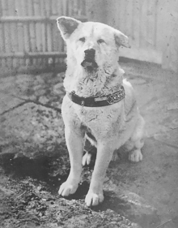

Descripción
Siempre a tu lado, Hachikō (Hachi: A Dog's Tale en inglés) es una película dramática estadounidense de 2009 basada en la historia real del fiel perro japonés Hachikō. Es una nueva versión de la cinta japonesa de 1987 Hachikō Monogatari, dirigida por Seijirō Kōyama. Escrita por Stephen P. Lindsey, fue dirigida por Lasse Hallström y protagonizada por Richard Gere, Joan Allen y Sarah Roemer. En Japón se estrenó el 8 de agosto de 2009. En Estados Unidos se proyectó en el Festival Internacional de Seattle el 13 de junio del mismo año antes de su distribución en salas, que se inició el 18 de diciembre.
Imágenes
